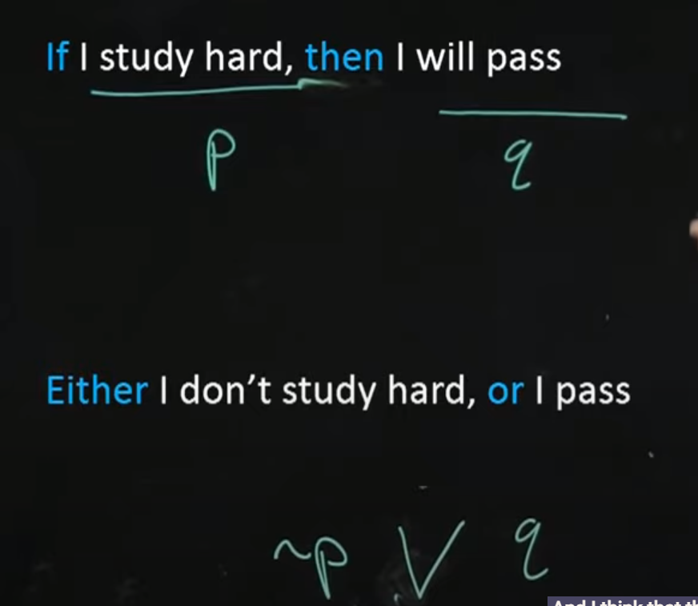

Discrete Mathematic#
Foundations#
1. Set Theory#
Definition
- Set
A collection of distinct objects, considered as an object in its own right.
- Tuple (\(a_1, a_2,\ldots,a_n\))
An ordered list of elements. \(n\)-tuple has \(n\) elemnets.
- Bag/Multiset [1]
A collection of elements where each element can appear more than once. The multiplicity of an element is the number of times it appears in the bag.
- Element
An object that belongs to a set.
- Subset
\(A \subseteq B\) if ever element of \(A\) is also an element of \(B\).
- Proper Subset
ALl the subset not including it self. As seen in the “less than” only sign \(\subset\).
- Null Set \(\phi\)
An empty set denoted \(\phi = \{\}\).
- Universal set \(\mathcal{U}\)
The set that contains all the objects under consideration.
- Cardinality
The number of elements in the set.
- Power set
The set of all subsets of a set \(A\), denoted by \(\mathcal{P}(A)\).
Operation
- \(A\cup B,\hspace{2ex} A+B\), Union
\(\{x| x\in A \lor x\in B\}\)
- \(A\cap B,\hspace{2ex} AB\), Intersection
\(\{x| x\in A \land x\in B\}\)
- \(A-B\), Difference
\(\{x| x \in A \land x \notin B\}\)
- \(\bar A, \hspace{2ex} \mathcal{U}-A\), Complement
\(\{x| x\notin A\}\)
\(\{x| x \in \mathcal{U} \land x \notin A\}\)- \(A\times B\), Cartesian Product
\(\{(a,b)| a\in A \land b\in B\}\)
Axiom
ZF Set theory
- Extensionality
Two sets are equal iff they have same element.
\(\forall A\forall B (\forall x (x\in A \iff x \in B)\implies A=B)\)
The converse, \(\forall A \forall B (A=B \implies \forall x (x\in A \iff x \in B))\)
- Regularity
Every non-null set \(A\) contains an element \(B\) such that \(A \land B\) are disjoint.
- Pairing
For any sets \(A\) and \(B\), there is a set \(\{A,B\}\) that contains exctly \(A\) and \(B\).
- Union
For any set \(A\), there is a set \(\bigcup A\) that that contains all elements of the elements of \(A\).
- Power Set
For any set \(A\), there is a set \(\mathcal{P}(A)\) that contains all the subsets of \(A\).
- Infinity
There exists a set \(\mathbb{N}\) that contains the \(\phi\) and is closed under the successor function.
- Replacement
The image(\(R_f\)) of a set under any definable function is also a set.
- Choice
For any set of non-null sets, there exists a choice function that selects an element from each set.
This implies the Well-Ordering Principle
Lemma
Laws in both set and logic
- Double Negation, I
\(\overline{\overline{A}} \equiv A\)
- Identity, II
\(A+\phi\equiv A\)
\(A\mathcal{U} \equiv A\)
- Idempotent, III
\(A+A \equiv A\)
\(AA \equiv A\)
- Inverse, IV
\(A+\bar{A}\equiv\mathcal{U}\)
\(A\bar{A}\equiv\phi\)
- Domination, V
\(A+\mathcal{U}\equiv\mathcal{U}\)
\(A\phi\equiv\phi\)
- De Morgan’s, VI <- I
\(\overline{A+B}\equiv\bar{A}\bar{B}\)
\(\overline{AB}\equiv\bar{A}+\bar{B}\)
- Absorbtion, VII
\(A+(AB)\equiv A\)
\(A(A+B)\equiv A\)
Like Algebra
- Double Negation, I
Even number of negation is equivalent to having no negation.
- Property of zero
II Identity property of Addition, first one, 1 + 0 = 1
V Multiplicative, second one, 1*0 = 0
4 Identity property of Substraction, second one, A-0 = A
- Commutative, 1
\(A+B\equiv B+A\)
\(AB\equiv BA\)
- Associative, 2
\(A+(B+C)\equiv (A+B)+C\)
\(A(BC)\equiv (AB)C\)
- Distributive, 3
\(A+(BC)\equiv (A+B)(A+C)\)
\(A(B+C)\equiv (AB)+(AC)\)
- Cancellation, 4
\(A-A\equiv\phi\)
\(A-\phi\equiv A\)
Difference Rule
- Involution[2], 5
\(A-(A-B)\equiv AB\)
- De Morgan’s, 6
\(A-(B+C)\equiv (A-B)(A-C)\)
\(A-(BC)\equiv (A-B)+(A-C)\)
- Right-Distributive, 7
\((A+B)-C\equiv (A-C)+(B-C)\)
\((AC)-C\equiv (A-C)(B-C)\)
Additional Lemmas
- Transitive Closure Lemma
If ( R ) is a transitive relation, then its transitive closure ( R^+ ) is also transitive.
- Schröder-Bernstein Lemma
If there are injections from set ( A ) to set ( B ) and from set ( B ) to set ( A ), then there is a bijection between ( A ) and ( B ).
- Cantor’s Diagonal Lemma
There is no surjection from a set ( A ) to its power set ( \mathcal{P}(A) ).
- Zorn’s Lemma
If every chain (totally ordered subset) in a partially ordered set ( P ) has an upper bound in ( P ), then ( P ) contains at least one maximal element.
Well-Ordering Principle#
Theorem 1.1 - Well-Ordering Principle[3]
Proof
To be continue…
Importance
- Induction Principle
Foundation for mathematical induction over natural number.
- Set Theory
foundational results about sets and their properties, especially those related to ordering and minimal elements.
Logic#
Definition
- Proposition
A declarative statement that hold one truth value (True or False)
- Contingency
A proposition that is neither a tautology nor a contradiction.
- Predicate
Relation involving variables that become propositions when the variables are given specific values or there exist a quantifier on the variable.
- Vacuous Truth/ Vacuously True
True in an empty sort of ways. There is no statement that proof it to be false otherwise.
The conditional statement P -> Q for all \(\bar p\) then it will always be true, because there is no reason for them to be false.
- Logical Equivalence \(\equiv, \Leftrightarrow\)
two logical expression is the same if their truth table are the same.
- Tautology \(T\)
Proposition that is always TRUE
- Contradiction \(F\)
Proposition that is always FALSE
Antecendent Consequent
Conditional
- Implication in semantics
 Choose whether you believe these two sentences mean the same thing or not.
- R -> S is a Tautology then we write R => S
\([(R\to s)\to T] \to R\Rightarrow s \)
- R <-> S is a tautology then we write R <=> S
\([(R\leftrightarrow S)\to T] \to R\Leftrightarrow S\) [4]
\([(R\leftrightarrow S)\to T] \to R\equiv S\) [5]
Converse of P -> Q Inverse of P -> Q Contrapositive of P -> Q
- Sufficient
\(A\Rightarrow B\),
A is sufficient for B because we know A leads to B and we did not know if without A, can there be B.
- Necessary
\(\bar A\Rightarrow \bar B\)
For a conditional, A => B, B is necessary for A. Consider the contrapositive, NOT B => NOT A.
Argument
Valid argument and inference rule
- Premise
Initial information that we know/assume to be true
Modus Ponen Modus Tollen Generalisation Specialisation Contradiction
Quantifier
- Compound Quantifier
This only happen when another quantifier is a part of the predicate of the first quantifier.
Negating Quantifier :
Booolean Algebra
Normal Form Conical Form Conjunctive Normal Form Disjunctive Normal Form
Lemma
Set Law’s Analouge for Logic
- Identity, II
\(P+F \equiv P\)
\(PT \equiv P\)
- Domination, V
\(P+T \equiv T\) (for OR, if one is true, then other will be true)
\(PF\equiv F\) (for AND, if one is false, then there is no true)
Propositional Logic (Statements, Connectives, Truth Tables)
Predicate Logic (Quantifiers, Predicates)
Logical Equivalences
Inference Rules and Proofs
2. Relations and Functions#
Definition
- Relation
A relation between two set \(A, B\) or \(Domain, Range\) is a subset of \(A\times B\).
It is an ordered pair (a,b) where \((a,b) \in A\times B\)
We can write a relation e.g. (a,b) means a own b, a > b or any other meaning.
- Relation on \(A\) / Directed Graph
Relation of A on itself.
relate element in a domain with codomain = the domain.
- Inverse Relation of AxB, \(\cev R\)
Inverse of the relation which is a subset of \(A\times B\) is a subset of \(B\times A\)
- Equivalence Relation on \(A\)
Relation that is all reflexive, symmetric, and transitive.
Definition of equality. It is the equality of modular arithmetic.
Property of a Relation on \(A\) (\(x,y \in A\))
- Reflexive
Relation that relate to itself, \(\forall x, f(x) = x\)
- Symmetric
Bidirectional direction, \(\forall x,y, f(x)=y \to f(y)=x\)
- Transitive
x -> y and y -> z THEN x -> z
Function
- Function
Function 1. does something to every input \(\in D\) 2. output only one thing \(\in R\).
Formal: A function, f, between D and R is a relation such that \((d,r) \in f\) or \(f(d) = r\), and \((d,r) \in f \land (d', r) \in f\) then \(d=d'\)
Relations#
Properties of Relations (Reflexive, Symmetric, Transitive)
Equivalence Relations and Partitions
Partial Orders
Functions#
Definition and Types (Injective, Surjective, Bijective)
Composition and Inverse Functions
Graph of a Function
3. Counting and Combinatorics#
Basic Counting Principles#
Permutations and Combinations
Pigeonhole Principle
Advanced Counting Techniques#
Inclusion-Exclusion Principle
Recurrence Relations
Generating Functions
4. Number Theory#
Divisibility and Prime Numbers#
Greatest Common Divisor (GCD)
Euclidean Algorithm
Modular Arithmetic#
Congruences
Chinese Remainder Theorem
Cryptography Basics#
RSA Algorithm
Public Key Cryptography
5. Graph Theory#
Basics of Graphs#
Types of Graphs (Undirected, Directed, Weighted)
Graph Terminology (Vertices, Edges, Degree)
Graph Algorithms#
Paths and Circuits
Eulerian and Hamiltonian Paths
Shortest Path Algorithms (Dijkstra’s, Bellman-Ford)
Minimum Spanning Tree (Kruskal’s, Prim’s)
6. Trees#
Properties of Trees#
Definition and Terminology (Root, Leaf, Height)
Binary Trees, Binary Search Trees
Tree Traversals#
Preorder, Inorder, Postorder
Applications of Trees#
Expression Trees
Huffman Coding
7. Algebraic Structures#
Groups, Rings, and Fields#
Definitions and Examples
Group Homomorphisms
Boolean Algebra#
Boolean Functions
Simplification of Boolean Expressions
Applications in Digital Logic
8. Automata Theory and Formal Languages#
Finite Automata#
Deterministic Finite Automata (DFA)
Non-Deterministic Finite Automata (NFA)
Regular Expressions#
Context-Free Grammars#
Turing Machines#
Recommended Learning Path#
Foundations (Set Theory, Logic, Relation and Function)
Counting and Combinatorics
Number Theory
Graph Theory
Trees
Algebraic Structures
Automata Theory and Formal Languages
Type Theory ormal Language